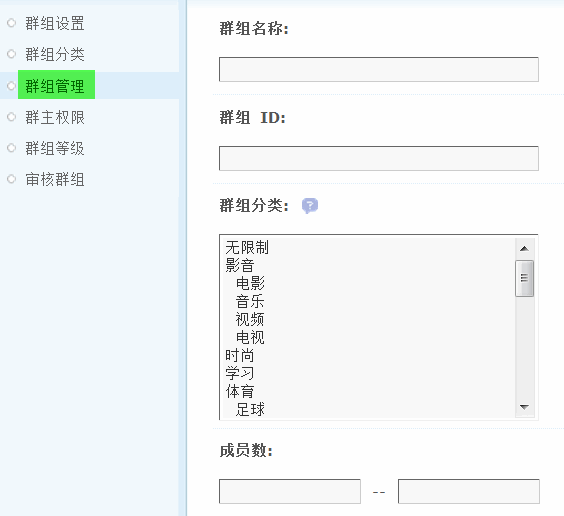
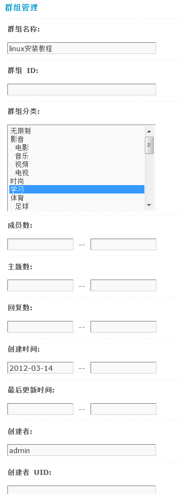
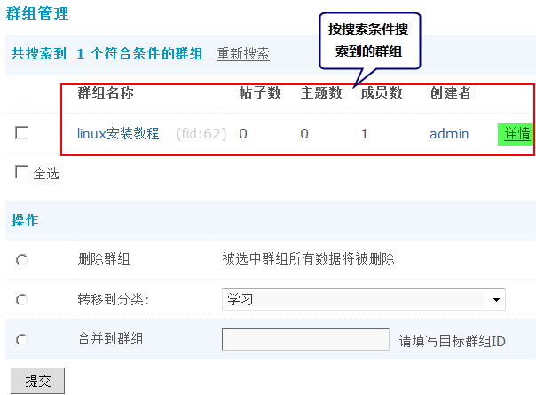
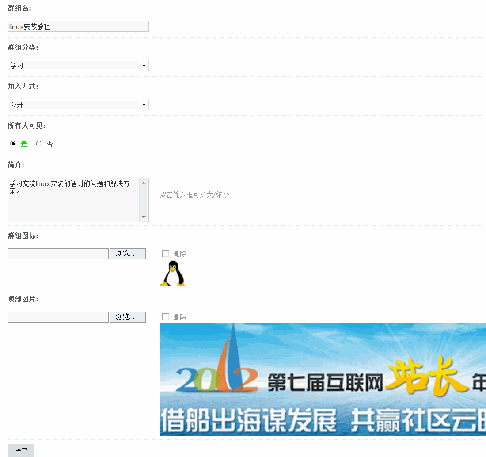
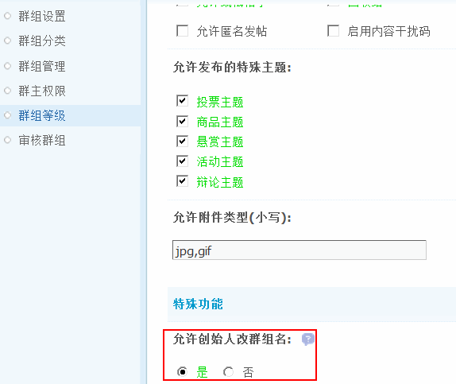
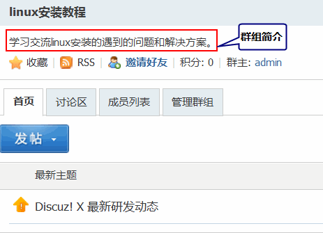
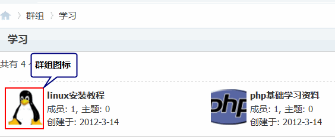

群组管理
除了创建者可以在前台管理自己的群组外，管理员也可以在后台对所有已有的群组进行管理操作，可以对群组的各项参数进行设置。
首先通过搜索条件找到需要进行管理的群组，搜索条件包括群组名称、群组ID、群组分类、成员数、主题数、回复数、创建时间、最后更新时间、创建者、创建者 UID。
操作路径：【后台】=>【群组】=>【群组管理】
1、搜索要管理的群组
在进行管理操作之前，请先通过搜索，找到想要管理的群组。
填写好搜索条件后，点击”提交“按钮，将会列出所有符合条件的群组。（如果什么都不填，将会列出所有群组）
可以对搜索出来的群组直接进行管理，包括删除群组、转移分类、合并到其它的群组。
点击右侧的“详情”链接，即可对该群组进行管理操作。
2、管理群组
可以管理其群组名、分类、加入方式、是否所有人可见，以及群组的简介、图标、顶部图片等。群组的自定义顶部图片功能，可以使群组的表现力更加丰富，用户可以选择能够体验群组特性的个性化图片装饰群组页面。
群组名：指群组的名称，只有在群组等级中设置该群组的等级“允许创始人改群组名”选择“是”创始人才可以修改群组名，一般用于会员在创建群组的时候把群组名称输错的情况使用。
群组分类：选择该群组的分类。
加入方式：指普通会员想加入该群组的方式，包括：关闭（即不允许会员加入该群组）、公开（即所有会员都可以自由加入）、邀请（需要邀请才可以加入该群）和审核（即加入该群需要审核通过后才可以发表话题、回复等操作）。
所有人可见：选择“是”该群公开所有人都可见。
简介：对该群的简单描述。在前台的显示效果为：
群组图标：该群组的图标，在前台的显示效果为：
群组图标可以在这里修改或者删除。
顶部图片：该群组的顶部图片，可以使群组的表现力更加丰富，用户可以选择能够体验群组特性的个性化图片装饰群组页面。在前台的显示效果为：
群组顶部图片可以在这里修改或者删除。